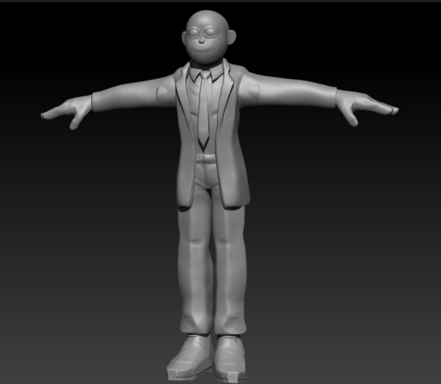
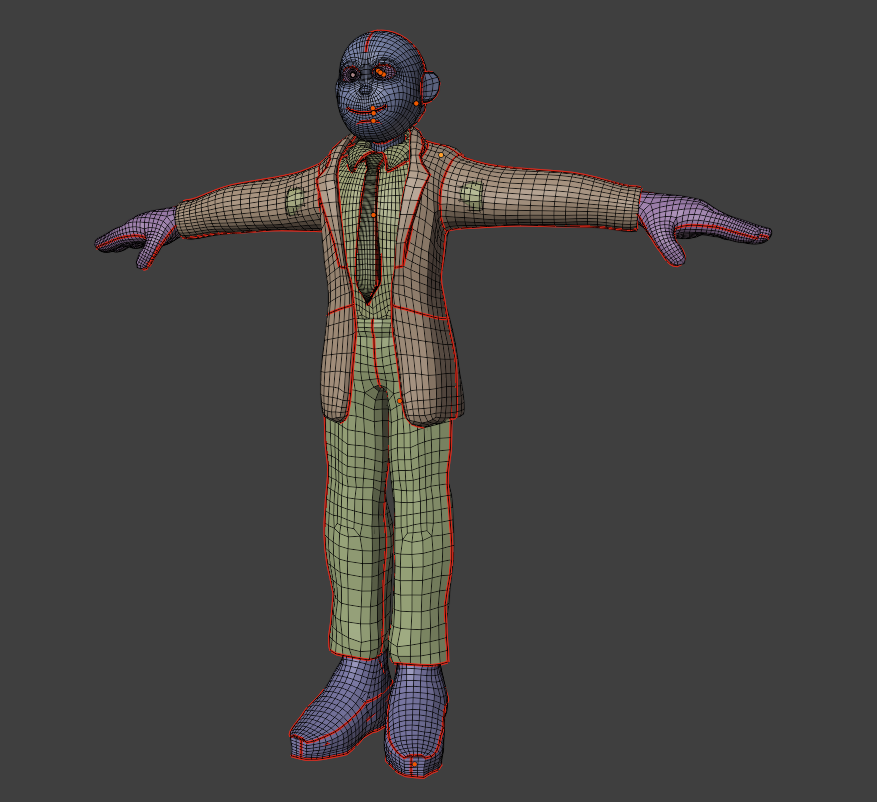
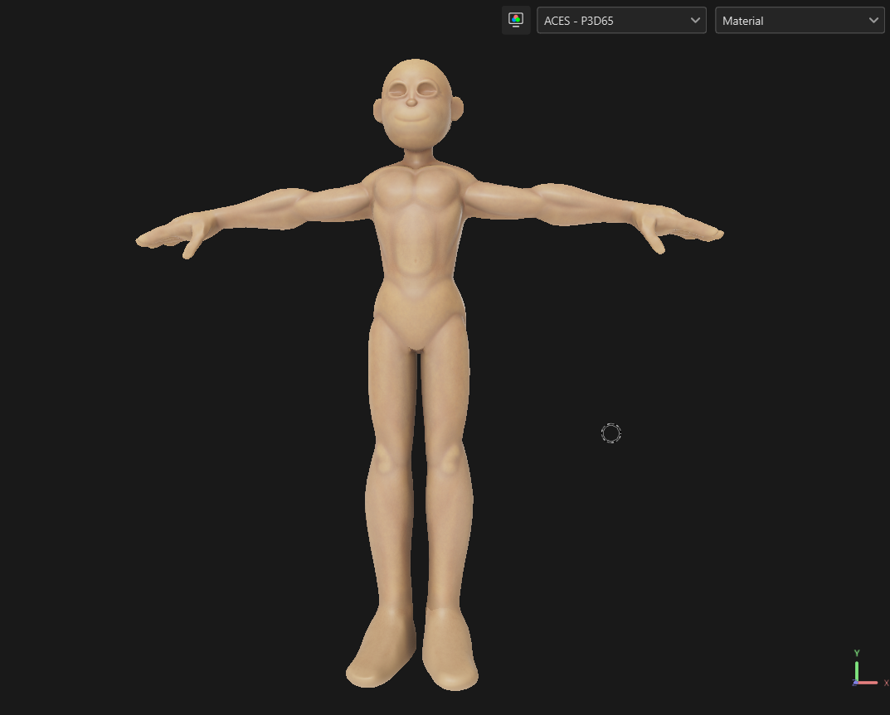
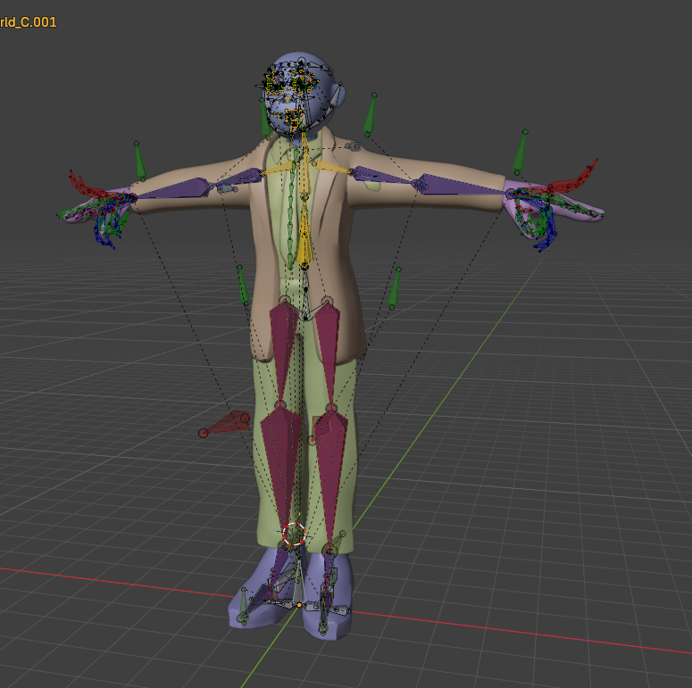

This article will explore the different stages of creating STORAGE, from the initial character model to the final result.
01 / FIRST STEPS
FIRST, WE MODEL
The first stage of the project: creating the original character model.

02 / RETOPOLOGY
LET'S RETOPO
The retopology stage, preparing the model for the next steps.

03 / TEXTURING
AFTER SOME UV'S, WE TEXTURIZE
Preparing the UVs and creating the character's textures.

04 / RIGGING
WE NEED A RIG NOW!
Building the rig to prepare the character for animation.

05 / GROOMING
LET'S PUT SOME GROOMING
Working on the character's hair and grooming.
06 / ENVIRONMENT
LET'S DO A BACKGROUND
Creating the environment and background for the final presentation.